Math 232: Calculus with Functions II
Course Slides
| Dr. Brian Walton |
|---|
| James Madison University |
as of April 23, 2026
Introductory Examples
Graph Analysis 1 (Begin Day 2)
\(\displaystyle f(x) = \frac{x}{x^2+4}\) and \(\displaystyle f'(x) = \frac{-x^2+4}{(x^2+4)^2}\)
Graph Analysis 2
\(f(x) = x \cdot (x^2-9)^{1/3}\)
Section 4.1: Algebraic Functions
Learning Goals
Know and use meaning, shape, and properties of rational powers \(x^{p/q}\text{.}\)
Know and apply relationship between roots and factors of polynomials, including root multiplicity.
Use synthetic division to determine factorization for polynomials when some exact roots are known.
Use polynomial long division rewrite an improper rational function as a polynomial plus a simplified proper rational function using the remainder.
Summary of Properties for Rational Powers
-
Recall that for \(n \gt 0\) (integer), \(x^{1/n} = \sqrt[n]{x}\) (roots are powers).
For integers \(p,q\) with \(q \gt 0\text{,}\) we define \(x^{p/q} = (\sqrt[q]{x})^p\) (first root, then power)
-
Domain and symmetry:
For \(q \gt 0\) even, \(\sqrt[q]{x}\) is defined on \([0,\infty)\text{.}\)
For \(q \gt 0\) odd, \(\sqrt[q]{x}\) is defined on \((-\infty,\infty)\text{.}\) In this case, if \(p\) is even, then \(x^{p/q}\) is an even function (left/right symmetry). If \(p\) is odd, then \(x^{p/q}\) is an odd function (left/right opposite).
Exploration of Simple Rational Powers
Link to Desmos activity: https://www.desmos.com/calculator/thbilpya5l.
Explore what changes about the graph as you modify the root \(q\) and the power \(p\text{.}\) Be sure to try both positive and negative values of \(p\text{.}\) What happens when \(p\) is greater than or less than \(q\text{?}\)
Polynomials: Root and Factor Relation
-
For any polynomial \(p(x)\text{,}\) knowing \(x=a\) is a root of \(p(x)\) is equivalent to knowing \((x-a)\) is a factor of \(p(x)\text{.}\)
That is, \(p(a)=0\) is equivalent to \(p(x) = (x-a) \cdot q(x)\) for some other polynomial \(q(x)\text{.}\)
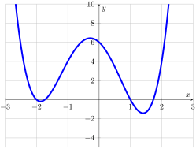
Synthetic Division
We can find the other polynomial factor using synthetic division. Let \(x=a\) be a root so that \(x-a\) is the factor. Complete a synthetic division table with three rows.
First row: All coefficients in descending powers (include 0 terms). To left, write value of \(a\text{.}\)
Second row: Below leading coefficient, write 0. All other terms will be found by multiplying the previous value in 3rd row times \(a\text{.}\)
Third row: Add the values in the first and second rows.
Interpret: The last value in 3rd row will be a remainder, and should be 0 for roots. All other values become coefficients of the polynomial \(q(x)\text{.}\) The degree of this polynomial has gone down by 1.
Example of Synthetic Division
The polynomial \(p(x)=x^4+x^3-5x^2-3x+6\) appears to have roots at \(x=1\) and \(x=-2\text{.}\) Complete the factorization.
Motivating Polynomial Division (Begin Day 3/Day 4)
Recall that division \(A \div B\) is trying to find a value \(C\) so that
The same thing happens with polynomials. Dividing a polynomial \(p(x)\) by another \(d(x)\) is trying to find a quotient polynomial \(q(x)\) and a remainder polynomial \(r(x)\) so that
Polynomial Multiplication by Table
To generalize the FOIL method of multiplication for two polynomials \(A(x)\) and \(B(x)\text{,}\) make a table.
Write each term (with sign) of \(A(x)\) as row headers.
Write each term (with sign) of \(B(x)\) as column headers.
In each cell of table, multiply the row and column headers to find the value.
The product is found by adding all terms together.
Example: Multiply \((x^2-3x+4)(x^3-x+5)\text{.}\)
Polynomial Division
One approach to polynomial division is to think about the table multiplication process where one polynomial is know, the other isn’t, but the final answer is known. You can reverse solve for the missing terms one at a time starting with the highest power.
Only one term contributes to the leading term, so you can quickly find the first term of the quotient. Once that is known, you can fill out the rest of the column/row.
The next term of the answer will be missing only one additional term coming from the first value in the next column/row. So you can again quickly find that next term of the quotient and then complete the column/row by multiplying.
Repeat this until all terms are identified.
There may still be some terms that don’t match. The remainder is whatever still needs to be added to the product to give the final result.
Polynomial Division Example
\(\displaystyle \frac{2x^4+5x^3-16x^2-9x+27}{x^2+3x-4} \)
We are seeking a quotient polynomial \(q(x)\) and a remainder polynomial \(r(x)\) (which must have degree smaller than 2) so that
Section 4.2: Power Functions
Learning Goals
Determine limits of power functions for \(x \to \pm \infty\) and \(x \to 0\text{.}\)
Use implicit differentiation to show power rule works for all rational powers.
Use graph analysis to describe graphs of power functions.
Model data using a power function.
End Behavior and Limits
Summary of Behaviors
Even and odd powers have same behavior as \(x \to +\infty\) and opposite behavior as \(x \to -\infty\text{.}\)
Positive powers are unbounded as \(x \to \pm \infty\text{.}\) Since \(x^{-k} = \frac{1}{x^k}\text{,}\) negative powers have \(y \to 0\) as \(x \to \pm \infty\)
Negative powers have a vertical asymptote \(x=0\text{.}\)
Describe the limits associated with \(f(x) = 2x^{4/3}\) and \(g(x) = -3x^{-3/5}\text{.}\)
Derivatives (Power Rule)
If \(y=x^{p/q}\text{,}\) then \(y^q = x^p\) and we can differentiate using implicit differentiation and the chain rule.
Graph Analysis (Begin Day 5)
Use graph analysis to describe and then sketch the graph of the functions.
\(\displaystyle f(x)=x^{3/5}\)
\(\displaystyle g(x)=x^{5/2}\)
Models Using Power Functions
A power function is a constant multiple times \(x\) to a rational power with a model equation:
Until we learn about logarithms, we will need to work with examples where we can recognize common powers of simple numbers: \((2, 4, 8, 16, 32 \ldots)\text{,}\) \((3, 9, 27, 81, 243, \ldots)\) and \((5, 25, 125, 625, \ldots)\text{.}\)
Find the Model
Find a power function that passes through \((1, 18)\) and \((3,\frac{2}{3})\text{.}\)
Section 4.3: Polynomials
Learning Goals
Understand the relation between factorization of a polynomial and its graph, including roots and their multiplicity, turning points, and irreducible quadratic factors.
Role of leading term for end behavior and limits as \(x \to \pm \infty\text{.}\)
Use information about roots and function values to create polynomial models of a function.
Multiplicity of Roots and Factors
When a polynomial has a factor \(x-a\) associated with a root \(x=a\text{,}\) the number of times the factor appears is called the multiplicity.
For example, \(p(x) = 2(x+3)(x+1)^2(x-2)^3(x-4)\text{:}\)
\(x=-3\) is a root with multiplicity 1
\(x=-1\) is a root with multiplicity 2
\(x=2\) is a root with multiplicity 3
\(x=4\) is a root with multiplicity 1
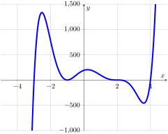
Shape of Multiplicity
Locally (if you zoom in), the behavior of a graph near a root behaves like \(x^m\) where \(m\) is the multiplicity of the root.
\(m=1\text{:}\) Graph locally looks like a line passing through axis
\(m=2\text{:}\) Graph locally looks like a parabola touching axis
\(m=3\text{:}\) Graph locally looks like a cubic passing through axis
\(m=4,6,8,\ldots\text{:}\) Higher even roots look like very flat parabola
\(m=5,7,9,\ldots\text{:}\) Higher odd roots look like very flat cubic
Roots and Multiplicity to Formula
Knowing the roots and their multiplicity allows us to write down the factored representation of a polynomial except for the leading coefficient:
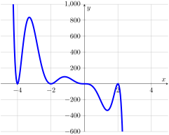
End Behavior from Leading Term (Begin Day 6)
Limits of a polynomial as \(x \to \pm \infty\) behave like just the leading term.
The sign of the leading coefficient always matches the sign as \(x \to +\infty\text{.}\)
For even degree, limits are the same for \(x \to \pm \infty\text{.}\)
For odd degree, limits for \(x \to -\infty\) is the opposite of the limit for \(x \to +\infty\text{.}\)
\(\displaystyle \displaystyle \lim_{x \to +\infty} -3x^3+2x^2 + 5x - 8\)
\(\displaystyle \displaystyle \lim_{x \to -\infty} -3x^3+2x^2 + 5x - 8\)
\(\displaystyle \displaystyle \lim_{x \to +\infty} 2x^4 - 5x^2 + 7\)
\(\displaystyle \displaystyle \lim_{x \to -\infty} 2x^4 - 5x^2 + 7\)
Irreducible Factors
There can be polynomial factors that don’t have any roots, always made up from irreducible quadratic, which are polynomials \(ax^2+bx+c\) of degree 2 that have complex roots. The discriminant \(b^2-4ac\) that appears in the quadratic formula will be negative. These complex roots come in conjugate pairs.
Polynomials always have at least one turning point between any two roots. Any extra turning points must come from irreducible quadratic factors.
A polynomial of degree \(n\) can have at most \(n\) real roots (counting multiplicity). (Count number of roots; degree must be that value or bigger)
The difference between the number of real roots (counting multiplicity) and the degree must be a multiple of 2.
A polynomial of degree \(n\) can have at most \(n-1\) turning points. (Count number of turning points; degree must be at least one bigger)
Equations for Coefficients
Another common modeling problem relating to polynomials is to find a polynomial of a given degree with certain known function or derivative values.
Write a model formula, such as \(f(x)=a x^3 + b x^2 + c x + d\text{,}\) that matches degree.
For each known function value or derivative, use the model formula with the given \(x\) value to create an equation about the coefficients.
Once the number of coefficient equations matches the number of coefficients, solve the system of equations to find the coefficients.
Write down the final model using the calculated coefficients.
Example: Find a quadratic polynomial with \(f(1)=2\text{,}\) \(f(4)=3\text{,}\) and \(f'(2)=0\text{.}\)
Section 4.4: Rational Functions
Learning Goals
Be able to define a rational function as a quotient of two polynomials. That is, if \(f(x) = \frac{p(x)}{q(x)}\) where \(p(x), q(x)\) are polynomials, then \(f(x)\) is a rational function.
Determine the domain of a rational function, interpreting discontinuities as vertical asymptotes or holes.
Use polynomial division to find slant and curve asymptotes.
Analyze the graph of a rational function.
Domain, Holes, and Vertical Asymptotes
Starting with a rational function \(f(x) = p(x) / q(x)\text{,}\) completely factor \(p(x)\) and \(q(x)\text{.}\)
Then \(f(x)\) is continuous everywhere except at the roots of \(q(x)\text{.}\) Suppose \(x=a\) is a root of \(q(x)\) so that \(q(a) = 0\text{.}\) If \(p(a)=0\) also, then cancel as many common factors as possible.
If the simplified polynomials still have a factor \((x-a)\) in the denominator, then \(x=a\) is a vertical asymptote or the location of a hole, `also called a removable discontinuity
If \((x-a)\) completely canceled out from the denominator, then \(f(x)\) has a hole at \(x=a\) (removable discontinuity).
Shape and Multiplicity
If we cancel all common factors of the numerator and denominator polynomials to get \(f(x) = \tilde{p}(x) / \tilde{q}(x)\) and these simplified polynomials are factored, then
The multiplicity of factors of \(\tilde{p}(x)\) (numerator) will match the shape of \(f(x)\) with the shape of polynomials at roots.
The multiplicity of factors of \(\tilde{q}(x)\) (denominator) result in vertical asymptotes with opposite infinite limits when the factor has odd multiplicity and with the same infinite limits when the factor has even multiplicity.
Describe the discontinuities and roots of \(\displaystyle f(x) = \frac{(x+2)(x-1)^3(x-3)^2}{3(x+2)^2(x-1)(x-4)^2}\text{.}\)
Polynomial Division and Horizontal, Slant and Curve Asymptotes
Begin Day 7
For a rational function \(f(x) = p(x)/q(x)\) with polynomials \(p(x),q(x)\text{,}\) compare the degrees of the polynomials.
If \(\deg(p) \lt \deg(q)\) (higher degree in denominator), then \(f(x)\) has a horizontal asymptote \(y=0\text{.}\)
If \(\deg(p) = \deg(q)\) (same degree), then \(f(x)\) has a horizontal asymptote \(y=A/B\) given by the ratio of leading coefficients.
If \(\deg(p) \gt \deg(q)\) (higher degree in numerator), then \(f(x)\) has a slant or curve asymptote \(y=Q(x)\) given by the quotient when doing polynomial division \(p(x) \div q(x)\text{.}\) If \(Q(x)\) is linear (degree 1), it is a slant asymptote. Any higher degree is called a curve asymptote.
\(\displaystyle \displaystyle \frac{2x^3-3x+5}{x^4+7x^2-8}\)
\(\displaystyle \displaystyle \frac{2x^3-3x+5}{x^3+7x^2-8}\)
\(\displaystyle \displaystyle \frac{2x^4-3x^2+5}{x^2+x-2}\)
Shape Analysis
Find where \(\displaystyle f(x) = \frac{x^3-3x-7}{x-3}\) is increasing and decreasing.
Section 5.1: Exponential and Logarithmic Functions
Learning Goals
Know the definition of an exponential function \(f(x) = A b^x\) where \(b \gt 0\) and \(b \ne 1\) and the alternate definition in terms of the natural base \(e\text{,}\) \(f(x) = A e^{k x}\text{,}\) where \(A\) and \(k\) can be any real numbers.
Distinguish between exponential growth \(b \gt 1\) (\(k \gt 0\)) and exponential decay \(b \lt 1\) (\(k \lt 0\)).
Understand and apply the inverse property of elementary exponentials \(\exp_b(x) = b^x\) and logarithms \(\log_b(x)\text{,}\) such that you can move between the equivalence of \(y = \exp_b(x) = b^x\) and \(x = \log_b(y)\) as well as the cancellation \(b^{\log_b(y)} = y\) for any \(y \gt 0\) and \(\log_b(b^x) = x\) for any \(x\text{.}\)
Know and apply the algebraic rules of exponents and logarithms, particular for products, quotients, and powers.
Exponential Functions
An elementary exponential function can be defined for any positive base \(b\) as
\begin{equation*} \exp_b(x) = b^x\text{.} \end{equation*}The properties of the functions follow from the properties of exponents.\(b^{0} = 1\) and \(\displaystyle b^{-x} = \frac{1}{b^x}\)
\(b^{x+y} = b^x \cdot b^y\) and \(b^{x-y} = \displaystyle \frac{b^x}{b^y}\)
\(\displaystyle b^{ax} = (b^x)^{a} = (b^a)^{x}\)
\((bc)^x = b^x \cdot c^x\) and \(\displaystyle \left(\frac{b}{c}\right)^x = \frac{b^x}{c^x}\)
Exponential Models
A more general exponential function has a constant multiple or amplitude factor,
When the base \(b\) is greater than 1 (or \(k > 0\)), we say we have exponential growth.
When the base \(b\) is less than 1 (or \(k > 0\)), we say that we have exponential decay.
An example of fitting data to an exponential model was given in the Snow Day Makeup Video.
Logarithms as Inverses
Recall that an inverse function allows us to solve for the \(x\) that makes \(f(x) = c\) true,
For every positive base \(b > 0\) with \(b \ne 1\) and \(c > 0\text{,}\) the equation
Because \(b^x > 0\) for all \(x\text{,}\) the domain of \(\log_b(x)\) requires \(x > 0\text{.}\) (The logarithm is undefined for zero and negative values.)
Exponential and Logarithm Equivalent Equations
Every equation about elementary exponentials can be rewritten in an equivalent equation about logarithms. The key is to recognize that the logarithm is talking about the value of the exponent while the exponential is actually talking about the final power of the base.
-
\(2^4 = 16\) has a base \(b=2\text{,}\) and exponent \(x=4\) and a final power \(16\) (4th power of 2).
As a logarithm statement, we have an equivalent equation \(\log_2(16) = 4\text{,}\) which says that the input 16 can be identified as a power of the base 2. What power? 4.
What is \(\log_{3}(243)\text{?}\)
If we know \(\log_{10}(x) = 3\text{,}\) what is \(x\text{?}\)
Properties of Logarithms
Begin Day 9
Logarithms inherit their properties from the properties of powers.
\(\log_b(1) = 0\) is from \(b^0 = 1\) and \(\log_b\left(\frac{1}{x}\right) = - \log_b(x)\)
\(\log_b(b^x) = x\) for all \(x\text{,}\) and \(b^{\log_b(x)} = x\) for all \(x > 0\) (Inverse Property).
\(\log_b(u \cdot w) = \log_b(u) + \log_b(w)\) (Product Rule).
\(\displaystyle \log_b\left(\frac{u}{w}\right) = \log_b(u) - \log_b(w)\) (Quotient Rule).
\(\log_b(u^p) = p \cdot \log_b(u)\) (Power Rule).
\(\log_b(x) = \frac{\log_a(x)}{\log_a(b)}\) (Change of Base).
Solving Equations
When the unknown is inside of an exponent, we first need to isolate the exponential term and then use a logarithm.
\(\displaystyle 3 \cdot 2^{2x} = 24\)
\(\displaystyle 5 \cdot 3^{x+4} = 75\)
Simplifying Formulas
There will be multiple circumstances where we need to apply properties of logarithms to rewrite an expression. The most relevant in calculus is to take a logarithm that involves products, quotients, or powers, and expand the expression using the corresponding rules.
\(\displaystyle \log_4\left(2x^3(x^2+1)^4\right)\)
\(\displaystyle \log_{10}\left(\frac{200(x^2+4)^3}{(2x+1)^5}\right)\)
Section 5.2 & 5.3: Exponential and Logarithmic Limits and Derivatives
Learning Goals (Begin Day 10)
Compute end behavior for exponential and logarithmic functions, using the ideas of exponential growth vs decay and the inverse property for logarithms.
Recognize how the derivatives of the exponential and logarithm come from the definition of the derivative and the properties of derivatives.
Compute derivatives using derivative rules involving the natural exponential and logarithm function, including the use of other derivative rules (product, quotient, chain).
Shapes of graphs based on derivative sign analysis.
Exponential Functions and Limits
Core Fact: Exponential functions are continuous, so we evaluate limits at points with simple evaluation. As the inverse of a monotonic continuous function, the logarithm must also be continuous.
-
Think about the graph of exponential growth and decay to determine limits as \(x \to \pm \infty\text{.}\)
-
If \(b > 1\text{,}\) then \(b^x\) is exponential growth and limits \(b^{-\infty} = 0\) and \(b^{\infty} = \infty\text{.}\)
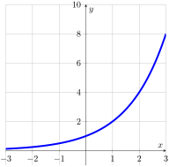
If \(0 < b < 1\text{,}\) then \(b^x\) is exponential decay and limits \(b^{-\infty} = \infty\) and \(b^{\infty} = 0\text{.}\)
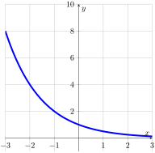
-
Derivative of Exponential
For each new function, we need to use the definition of the derivative to discover the corresponding derivative rule.
Natural Base \(e\)
The value of \(L(b)\) is exactly the value of the derivative of \(b^x\) at \(x=0\text{.}\) Different bases have different slopes at this point.
The base \(e\) is that number such that \(L(b) = 1\) so that the tangent line is exactly \(y=1+x\text{:}\)
Since \(L(e) = 1\text{,}\) we have the remarkable derivative rule \(\frac{d}{dx}[e^x] = e^x\text{.}\) Incorporating the chain rule, for any formula \(u\text{,}\) we have
Practice Derivatives with Exponentials
Find the derivatives of the following functions.
\(\displaystyle f(x) = x^2 e^{x}\)
\(\displaystyle g(x) = 3e^{-2x}\)
\(\displaystyle h(x) = x e^{-x^2}\)
The Natural Logarithm
Now that we have defined the natural base \(e\text{,}\) we can also define the natural logarithm, which is the inverse function to \(y=e^x\text{:}\)
Like all logarithms, we have \(\ln(1) = 0\text{.}\)
Because \(e >1\text{,}\) we also have \(\ln(x) < 0 \) for \(0 < x < 1\) and \(\ln(x) > 0\) for \(x > 1\text{.}\)
Limits of Logarithms
A logarithm is the inverse of an exponential. This means that if \((x,y)=(c,d)\) is on the graph \(y=\log_b(x)\text{,}\) then \((x,y)=(d,c)\) is on the graph of \(y=b^x\text{.}\) That is, the roles of \(x\) and \(y\) are reversed.
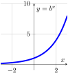
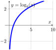
For \(b > 1\text{:}\)
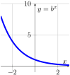
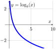
For \(0 < b < 1\text{:}\)
The Natural Logarithm’s Derivative
To find \(\ln'(x)\text{,}\) we will do the same approach as for all inverse functions—use implicit differentiation:
Practice Derivatives with Logarithms (Begin Day 12)
Find the derivatives of the following functions.
\(\displaystyle f(x) = \ln(5x)\)
\(\displaystyle g(x) = \ln(x^2+1)\)
\(\displaystyle h(x) = x \ln(x)\)
Logarithms and Absolute Value
The function \(f_+(x) = \ln(x)\) is only defined on \((0,\infty)\text{.}\)
The function \(f_-(x) = \ln(-x)\) is only defined on \((-\infty,0)\text{.}\)
The function \(f(x) = \ln(|x|)\) is defined on \((-\infty,0) \cup (0,\infty)\text{.}\)
Using Logarithm Expansion Before Differentiation
If \(f(x) = \ln(u \cdot w)\) or \(f(x) = \ln(\frac{u}{w})\) or \(f(x) = \ln(u^w)\text{,}\) differentiation is much easier if you first apply the logarithm expansion rules before doing the derivative.
\(\displaystyle f(x) = \ln\left(x^4(3x+1)^5\right)\)
\(\displaystyle g(x) = \ln\left(\frac{4^{3x}}{(x^2+5)^6}\right)\)
Logarithmic Differentiation
If a function \(f(x)\) is written as products, quotients or powers (without a logarithm), then we can often simplify finding \(f'(x)\) by calculating \(\ln(|f(x)|)\text{,}\) expanding it fully, and then computing a derivative using the relation
\(\displaystyle \displaystyle f(x) = \frac{4x^4 (x^2+1)^3}{(2x-3)^5}\)
\(\displaystyle \displaystyle g(x) = \frac{e^{2x}(x^3-2)^4}{3e^{5x}+1}\)
Section 5.4: Exponential Models
Learning Goals
All exponentials and even powers can be written in terms of the natural exponential.
After rewriting in terms of base \(e\text{,}\) we can compute derivatives using the chain rule.
Recognize cues for exponential growth and decay applications.
Change of Base
Any positive value \(u\) can be rewritten \(u = e^{\ln(u)}\text{.}\)
Rewrite the following in terms of \(e\) to a power.
\(\displaystyle 2^{-x/3}\)
\(x^4\) for \(x > 0\)
\(\displaystyle (1+2x)^{x}\)
Derivatives with Other Bases
Change the base to the natural base \(e\) and then find the derivative.
\(\displaystyle f(x) = 2^x\)
\(\displaystyle g(x) = 3^{-x^2}\)
\(\displaystyle p(x) = x^4\)
\(\displaystyle h(x) = x^x\)
Exponential Growth and Decay
We know that \(f(x) = b^x\) has a derivative \(f'(x) = b^x \cdot \ln(b)\text{.}\) Rewriting \(f(x) = e^{\ln(b) \cdot x}\) as \(f(x) = e^{kx}\) where \(k = \ln(b)\) shows that \(f'(x) = k \cdot f(x)\text{.}\)
That is, every simple exponential model has the property the derivative (or rate of change) is proportional to the function value.
Radioactive decay: The number of atoms that decay during a short interval is proportional to the total number of atoms.
Population growth: The number of births or deaths during a short interval is proportional to the total population.
Example: A population grows at a rate that is proportional to the current population. At \(t=0\text{,}\) there are 400 individuals and at \(t=10\text{,}\) there are 600 individuals. Find a model for the population.
Example: Carbon-14 has a half-life of 5730 years. If a sample now has 40% of the amount of Carbon-14 that it started with, find the time when the sample began.
Section 5.5: L’Hopital’s Rule
Learning Goals
Only indeterminate limits that have the form \(0/0\) or \(\infty/\infty\) apply to L’Hopital’s Rule
Evaluate limits using L’Hopital’s rule
Be able to rewrite other indeterminate limits in the L’Hopital-style indeterminate form, including those involving powers
Indeterminate Limit Forms
A limit form refers to evaluating the individual terms of a limit and combining the resulting limits. The limit form is indeterminate if there are different limit answers possible for the same limit form, usually coming from cancellation involving infinity or zero.
\(\displaystyle \infty - \infty\)
\(\displaystyle \frac{\infty}{\infty}\)
\(\displaystyle \frac{0}{0}\)
\(\displaystyle 0 \cdot \infty\)
\(0^0\text{,}\) \(1^\infty\text{,}\) \(\infty^0\)
L’Hopital’s Rule
When a function \(f(x)\) is a quotient of two functions \(\displaystyle f(x) = \frac{u(x)}{w(x)}\) and we have:
either \(u(x) \to 0\) and \(w(x) \to 0\) as \(x \to a\) (limit form \(0/0\))
or \(u(x) \to \pm\infty\) and \(w(x) \to \pm\infty\) as \(x \to a\) (limit form \(\infty/\infty\))
You must verify that the limit form is either \(0/0\) or \(\infty/\infty\) and show that the limit of \(u'(x)/w'(x)\) itself has a limit. If both are true, then the limit of \(u(x)/w(x)\) will have the same limit.
We can repeat using the rule on the new formula if it is still indeterminate.
Examples of L’Hopital’s Rule
\(\displaystyle \displaystyle \lim_{x \to 3} \frac{2x-6}{x^2-9}\)
\(\displaystyle \displaystyle \lim_{x \to 2} \frac{2^x-4}{x^2-4}\)
\(\displaystyle \lim_{x \to 0} \frac{e^{2x}-1-2x}{x^2}\) (Begin Day 14)
\(\displaystyle \displaystyle \lim_{x \to \infty} \frac{e^x}{x^2}\)
Rewriting Indeterminate Forms
A function with indeterminate form \(0 \cdot \infty\) should be rewritten by rewriting one of the factors as division by the reciprocal.
\(\displaystyle \displaystyle \lim_{x \to \infty} x e^{-x}\)
\(\displaystyle \displaystyle \lim_{x \to 0^+} x \ln(x)\)
(Begin Day 15) A function with indeterminate form involving a power should be rewritten as \(e^u\) using logarithms, find \(\lim u = L\) and then use \(e^L\) as the final limit.
\(\displaystyle \displaystyle \lim_{x \to 0} \left(1+x\right)^{2/x}\)
\(\displaystyle \displaystyle \lim_{x \to 1^+} (\ln(x))^{x-1}\)
Section 6.1: Trigonometric Functions
Learning Goals
Trigonometric functions were first defined for angles of right triangles: SOH CAH TOA
Two special triangles: 30-60-90 and 45-45-90
Change definition to use unit circle instead of right triangles
Measure angles in degrees (360 per circle) and radians (2 pi per circle)
Right Triangles
Start by introducing some geometric ideas.
An acute angle is an angle smaller than a right angle (90 degrees).
Two geometric shapes are similar if corresponding angles are equal and corresponding edges are all proportional.
Two right triangles (have 90 degree angle) if one acute angle matches.
Define trigonometric functions (SOH CAH TOA): Given acute angle \(\theta\text{,}\) take a right triangle with angle \(\theta\) and identify the legs that are opposite and adjacent and the hypotenuse.
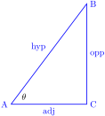
\(\displaystyle \displaystyle \sin(\theta) = \frac{\text{opp}}{\text{hyp}} = \frac{BC}{AB}\)
\(\displaystyle \displaystyle \cos(\theta) = \frac{\text{adj}}{\text{hyp}} = \frac{AC}{AB}\)
\(\displaystyle \displaystyle \tan(\theta) = \frac{\text{opp}}{\text{adj}} = \frac{BC}{AC}\)
Geometric Applications
The triangle definitions for trigonometric functions allow us to solve for the lengths of various right triangles in applications:
A kite is flying with 100 ft of string and we measure the angle of the string from the ground as \(40^\circ\text{.}\) How high is the kite?
When standing 20 feet away from the base of a tower, we find we need to look up \(70^\circ\) to see the top. How tall is the tower?
At a stretch where a river flows in a straight line, you look directly across the river and identify a landmark. Then you walk 50 feet upriver and again look at the same landmark. But to see the landmark, you are looking along a line that is now 30˚ away from the bank. How wide is the river?
Two Special Triangles
You should be able to reproduce the exact trigonometric values for the following two triangles. Remember the Pythagorean Theorem: \(a^2 + b^2 = c^2\) (leg lengths are \(a\) and \(b\))
The isosceles right triangle has 45 degree angles.
A bisected equilateral triangle is a right triangle with 30 and 60 degree angles.
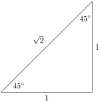

Generalizing Trigonometry: Step 1
Only defining the trigonometric values for acute angles is limiting. We want to define it for arbitrary angles.
Step 1: Define everything in terms of sine and cosine.
Tangent: \(\displaystyle \tan(\theta) = \frac{\sin(\theta)}{\cos(\theta)}\)
Secant: \(\displaystyle \sec(\theta) = \frac{1}{\cos(\theta)}\)
Cotangent: \(\displaystyle \cot(\theta) = \frac{\cos(\theta)}{\sin(\theta)}\)
Cosecant: \(\displaystyle \csc(\theta) = \frac{1}{\sin(\theta)}\)
Generalizating Trigonometry: Step 2
Step 2: Define angles in terms of rotation.
360 degrees = 1 full rotation (circle)
\(2\pi\) radians = 1 full rotation (circle)
Draw a unit circle (radius 1) with axes going through the center. Sun rises in the east (right side) and sets in the west (left side)
Angle is measured from the positive \(x\) axis to the origin to a ray extending to infinity.
1 radian is the angle that travels exactly 1 radius length on the arc (partial circumference).
Angle Conversions (Begin Day 16)
To convert measures of angles between degrees and radians, you just need to know that 360 degrees and \(2\pi\) radians both measure the same angle, and all other angles use the same proportionality.
Given an angle in degrees: Divide by 360 to find out the number of rotations, multiply by \(2 \pi\) to get the equivalent radians.
Given an angle in radians: Divide by \(2 \pi\) to find out the number of rotations, multiply by \(360\) to get the equivalent degrees.
Practice:
90 degrees to radians
-900 degrees to radians
0.75 radians to degrees
Generalizing Trigonometry: Step 3
The critical observation connecting the circle to trigonometry is that for a unit circle, an acute angle with the angle placed at the origin has a hypotenuse of 1.
opposite length: height of the triangle is equal to \(y\) coordinate on circle
adjacent length: width of the triangle is equal to \(x\) coordinate on circle
\(\displaystyle \sin(\theta) = \text{y-coordinate}\)
\(\displaystyle \cos(\theta) = \text{x-coordinate}\)
\(\tan(\theta) = \frac{\sin(\theta)}{\cos(\theta)} = \frac{y}{x}\) and \(\sec(\theta) = \frac{1}{\cos(\theta)} = \frac{1}{x}\)
\(\cot(\theta) = \frac{\cos(\theta)}{\sin(\theta)} = \frac{x}{y}\) and \(\csc(\theta) = \frac{1}{\sin(\theta)} = \frac{1}{y}\)
Practice Finding Trig Values
Find \(\sin(\theta)\) and \(\cos(\theta)\) and then all other trigonometric function values.
\(\displaystyle \theta = \frac{-\pi}{4}\)
\(\displaystyle \theta = \frac{2\pi}{3}\)
\(\displaystyle \theta = \frac{-7\pi}{6}\)
\(\displaystyle \theta = \frac{23 \pi}{4}\)
Section 6.2: Trigonometric Identities
Learning Goals (Begin Day 17)
The unit circle equation is \(x^2+y^2=1\text{.}\) This leads to three Pythagorean identities for trigonometry.
Sine and cosine have sum identities to expand \(\sin(A+B)\) and \(\cos(A+B)\text{.}\)
Use identities to take given information to find trigonometric values of various combinations or transformations of angles.
Trigonometric functions have symmetries: even vs odd, periodic
Pythagorean Identity
The unit circle equation in terms of coordinates is \(x^2+y^2 = 1\text{.}\) Because \(\cos(\theta)\) and \(\sin(\theta)\) are the \((x,y)\) coordinates, the unit circle equation also gives us the Pythagorean identities, valid for any angle \(\theta\text{.}\)
Example: If \(\pi \lt \theta \lt \frac{3 \pi}{2}\) and \(\sin(\theta) = -0.6\text{,}\) find \(\cot(\theta)\text{.}\)
Sum Identities
The unit circle interpretation of an angle is as a rotation of the point \((1,0)\) around the center of the circle. Adding angles corresponds to combining rotations. The sum identities tell us how to find the coordinates for a rotation formed by adding two rotations based on the known coordinates of the individual rotations.
Example: Suppose \(\beta\) is the angle ending in Q2 with \(\sin \beta = \frac{2}{5}\text{.}\) Find \(\sin(\beta + \frac{\pi}{4})\) and \(\cos(\beta + \frac{\pi}{4})\text{.}\)
Even/Odd Symmetry
If we compare angles \(\theta\) and \(-\theta\) on the unit circle, we can immediately recognize that their standard positions terminate with the same x-coordinates and opposite y-coordinates. This implies that \(\sin(-\theta) = - \sin(\theta)\) (an odd function) and that \(\cos(-\theta) = \cos(\theta)\) (an even function).
Consequently, the sum identities also give us difference identities:
Visualizing the Graphs: Periodic Behavior
For every full rotation by an angle \(2 \pi\text{,}\) we return to the same point on the unit circle. This means that all of the trigonometric functions are periodic because they satisfy
The tangent and cotangent functions actually repeat twice per full rotation and have period \(\pi\text{.}\)
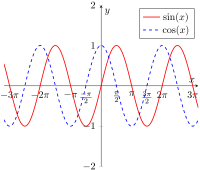
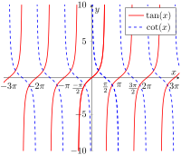
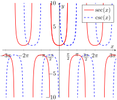
Double-Angle Identities
Doubling an angle corresponds to adding it to itself. This gives us so-called double-angle identities.
If we use the Pythagorean identity \(\sin^2(\theta) + \cos^2(\theta) = 1\) and solve for \(\sin^2(\theta) = 1 - \cos^2(\theta)\) or for \(\cos^2(\theta) = 1 - \sin^2(\theta)\text{,}\) we arrive at two alternative representations of the cosine’s double-angle identity:
Half-Angle Identities
Using the double-angle identity and solving for \(\sin^2(\theta)\) or \(\cos^2(\theta)\text{,}\) we create what are called the half-angle identities.
Note that because \(\sin(\theta)\) or \(\cos(\theta)\) appears squared, there are actually two locations for a half-angle based on the unit circle location. The identities become useful in Calculus 2 (MATH 236) when learning about integration methods.
Section 6.3: Limits and Derivatives of Trigonometric Functions
Learning Goals
Except where they are undefined due to division by zero, trigonometric functions are continuous.
Infinite oscillation that does not decay has no limit. The squeeze theorem (sandwich theorem) gives us a method to deal with decay.
The derivatives of sine and cosine cycle between one another.
All other derivatives derive from the quotient rule.
Continuity
Sine and cosine smoothly change to create continuous periodic waves.
The other four trigonometric functions all have vertical asymptotes at the points where the denominator equals zero, but they are otherwise continuous.
\(\displaystyle \displaystyle \lim_{x \to \pi} \cot(x)\)
\(\displaystyle \displaystyle \lim_{x \to -\frac{\pi}{2}} \sec(x)\)
Oscillation and Limits
For a function \(f(x)\) to have a limit, the value of \(f(x)\) must become closer and closer to that limiting value. Oscillation (waves) means that a function keeps moving between different values. The only way we can have a limit with infinitely many oscillations is if the amplitude of the oscillation decays to 0.
Squeeze (Sandwich) Theorem
If \(f(x)\) is squeezed (sandwiched) between two functions \(L(x)\) and \(U(x)\text{,}\) so that \(L(x) \le f(x) \le U(x)\text{,}\) and they have the same limit \(\displaystyle \lim_{x \to a} L(x) = \lim_{x \to a} U(x) = C\text{,}\) then \(\displaystyle \lim_{x \to a} f(x) = C\text{.}\)
For sine (and similarly for cosine), we can always start with \(-1 \le \sin(x) \le 1\text{.}\)
\(\displaystyle \displaystyle \lim_{x \to 0^+} x \sin(\frac{1}{x})\)
\(\displaystyle \displaystyle \lim_{x \to \infty} x^{-1} \sin(x^2)\)
Derivatives of Sine and Cosine (1)
As the most basic trigonometric functions, sine and cosine need their derivatives based on the limit definition. We use the sum identity in the process.
Derivatives of Sine and Cosine (2)
There are two key limits that appear, similar to \(\displaystyle \lim_{h \to 0} \frac{b^h-1}{h}\) that had appeared when learning about exponential derivatives. When we are working with angles defined in radians, we can show
Other Trigonometric Derivatives
Once we know the derivatives of sine and cosine, all others can be found using the basic rules of calculus.
Chain Rule for Sine and Cosine:
\begin{align*} \frac{d}{dx}\Big[\sin(u)\Big] \amp = \sin'(u) \cdot u' = \cos(u) \cdot u'\\ \frac{d}{dx}\Big[\cos(u)\Big] \amp = \cos'(u) \cdot u' = -\sin(u) \cdot u' \end{align*}Using Quotient Rule:
\begin{align*} \tan'(x) \amp = \frac{d}{dx}\Big[\frac{\sin(x)}{\cos(x)} \Big] = \frac{\cos(x) \sin'(x) - \sin(x) \cos'(x)}{\cos^2(x)}\\ \amp = \frac{\cos^2(x) + \sin^2(x)}{\cos^2(x)} = \frac{1}{\cos^2(x)}\\ \amp = \sec^2(x) \end{align*}
Summary of New Derivatives
\(\displaystyle \sin'(x) = \cos(x)\)
\(\displaystyle \cos'(x) = -\sin(x)\)
\(\displaystyle \tan'(x) = \sec^2(x)\)
\(\displaystyle \sec'(x) = \sec(x)\tan(x)\)
\(\displaystyle \cot'(x) = -\csc^2(x)\)
\(\displaystyle \csc'(x) = -\csc(x)\cot(x)\)
Sign Analysis of Trigonometric Derivatives
Now that we know the formulas for derivatives, we can analyze the shape of graphs using sign analysis of derivatives. Also note that we can determine signs based on which quadrant an angle is in.
-
\(y=\sin(x)\)
\(y=\sec(x)\)
Section 6.4: Inverse Trigonometric Functions and Their Derivatives
Learning Goals
Use inverse trigonometric functions to find multiple solutions to trigonometric equations.
Evaluate composition of trigonometric functions and inverse trigonometric functions.
Calculate derivatives of inverse trigonometric functions.
Restricted Domains
Inverse functions allow us to solve equations \(f(x)=y\text{,}\) \(x=f^{-1}(y)\text{.}\) This only works if for a given value of \(y\) there is only one value \(x\) making \(f(x)=y\) true. Otherwise, \(f^{-1}\) wouldn’t be a function.
Because trigonometric functions are periodic, they are not one-to-one unless we restrict the domain:
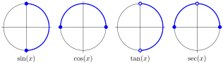
Inverse Trigonometric Functions
Trigonometric functions have angles as input and values as output. Inverse trigonometric functions take values as input and angles as output.
Interpret the following:
\(\displaystyle \sin^{-1}(0.5)\)
\(\displaystyle \cos^{-1}(\frac{2}{3})\)
\(\displaystyle \tan^{-1}(-3)\)
Solving Trigonometric Equations
Solve the equations. Find multiple solutions.
\(\displaystyle 3 \sin(x) + 1 = 0\)
\(\displaystyle \sin(x) - 3\cos(x) = 0\)
Composition of Functions
When evaluating composition of trigonometric functions and inverse trigonometric functions, it is critical to think about what the input of a function represents—an angle or a value—and what interval is relevant.
\(\displaystyle \sin^{-1}(\sin(\frac{\pi}{4}))\)
\(\displaystyle \cos^{-1}(\cos(\frac{-3\pi}{4}))\)
\(\displaystyle \tan(\tan^{-1}(3))\)
\(\displaystyle \tan^{-1}(\tan(\frac{13\pi}{4}))\)
Composition of Functions, continued
The Pythagorean identities help us when working with composition of inverse of paired functions.
\(\displaystyle \cos(\sin^{-1}(\frac{3}{4}))\)
\(\displaystyle \sec(\tan^{-1}(4))\)
Implicit Function Derivative
If we want to find the derivative of \(y = \sin^{-1}(x)\text{,}\) use implicit differentiation on the inverse equation
All Implicit Function Derivatives
Find \(f'(x)\) for the following functions:
\(\displaystyle f(x) = \mathrm{asin}(x^2)\)
\(\displaystyle f(x) = \tan^{-1}(e^{2x})\)
Section 7.4: Antiderivatives and Indefinite Integrals
Learning Goals
If we start with \(f'(x)\) and use it to find \(f(x)\text{,}\) we call \(f(x)\) an antiderivative of \(f'(x)\text{.}\) The process of finding antiderivatives is called antidifferentiation.
Different functions can have the same derivative. If so, then they by a constant on any interval on which they are continuous. If \(F'(x)=G'(x)\text{,}\) then \(F(x) = G(x) + C\text{.}\)
Antiderivatives are also called indefinite integrals. Suppose \(g(x)\) is the derivative of some unknown \(G(x)\text{,}\) then we write
\begin{equation*} \int g(x) \, dx = G(x) + C \end{equation*}to represent the family of all possible antiderivatives, where \(C\) is called the integration constant.Find a particular antiderivative by solving for \(C\) given some initial point.
Be able to recognize functions that are derivatives and work backwards to find antiderivatives.
Differ By a Constant
Adding a constant to a function graphically is represented by a vertical displacement, which does not change the slope:
The converse is also true: Two functions with the same derivative are just shifted versions of one another.
Suppose \(F(x)\) and \(G(x)\) are differentiable functions so that \(F'(x) = G'(x)\text{.}\)
If we were to define \(H(x) = F(x) - G(x)\text{,}\) then we know \(H'(x) = 0\) everywhere.
The Mean Value Theorem implies that for any two points \(H(b) - H(a) = H'(c) \cdot (b-a) = 0\text{,}\) which implies \(H(b) = H(a)\text{.}\)
\(H(x)\) must be some constant value, say \(H(x) = K\text{,}\) which means \(F(x) = G(x) + K\text{.}\)
Antiderivative
Starting with \(f(x)\) and calculating \(f'(x)\) is the process of differentiation. The inverse process of starting with a function \(f(x)\) and trying to find the function \(F(x)\) (different symbol!) so that \(F'(x) = f(x)\) is called antidifferentiation. \(F(x)\) is called an antiderivative of \(f(x)\text{.}\)
Antiderivatives are not unique. Once you find one, all others can be found by adding different constants.
Example: Find all possible antiderivatives of \(f(x) = 2x\text{.}\)
Notation: Indefinite Integral
(Start of Day 23) For a reason that will only become clear with the Fundamental Theorem of Calculus, antiderivatives are also called integrals, specifically what is called an indefinite integral. The symbol for an integral is an elongated “S”-like shape that is \(\int\text{,}\) which stands for “sum”.
A derivative is defined a difference quotient (subtract and then divide). The symbol \(\frac{dy}{dx}\) should make us think about a change of \(y\) divided by the small change \(dx\text{.}\) The inverse process of a derivative should invert these steps: multiply by the \(dx\) and then add (sum). This is the reason behind integral notation:
Antiderivative Rules
Every derivative rule we learned, when read in reverse becomes an antiderivative rule.
Constant Multiple and Sum Rules
We get a constant multiple rule:
We also get a sum rule:
These two rules are often used together, which we call linearity.
Practice Linearity
\(\displaystyle \displaystyle \int 5x^2 + 4 \sin(x) \, dx\)
\(\displaystyle \displaystyle \int 10e^{2x} + \frac{6}{x} \, dx\)
Product and Quotient: About the Antiderivative
The inverse of the product rule requires recognizing patterns:
Same thing for recognizing a quotient rule as a pattern:
Practice Recognizing Products or Quotients
\(\displaystyle \displaystyle \int x \cos(x) + \sin(x) \, dx\)
\(\displaystyle \displaystyle \int \frac{x \sin(x) + \cos(x)}{x^2} \, dx\)
More About Simple Powers
The power rule for derivatives \(\frac{d}{dx}[x^n] = nx^{n-1}\) shows that in a derivative the power of \(x\) is always multiplied by a value that is one higher than the power of the variable in the derivative. That is, in a basic derivative that had \(x^4\text{,}\) the natural derivative would have been \(5x^4\) coming from an antiderivative of \(x^5\text{.}\) If we wanted only \(x^4\) in the derivative, a constant multiple would have worked:
Power Rule for Antiderivatives
In general, for \(n \ne -1\text{,}\) we can always use the power rule for antiderivatives:
Practice:
\(\displaystyle \displaystyle \int x^{10} \, dx\)
\(\displaystyle \displaystyle \int 4x^2 - 5x^{-4} \, dx\)
\(\displaystyle \displaystyle \int \frac{4}{x^3} \, dx\)
Particular Antiderivatives
(Start Day 24) The value of the constant of integration changes the vertical position of the function. If we know the function is supposed to pass through a specific point, then it is possible to choose the constant to succeed. The point is called the initial condition. The resulting antiderivative is called the particular antiderivative.
Try the following examples:
Find the function \(f(x)\) so that \(f'(x) = x^2-4x\) and \(f(1)=2\text{.}\)
Find the function \(g(x)\) so that \(g'(x) = 2e^{-x} + \sin(2x)\) and \(g(0)=5\text{.}\)
Section 7.2: Area and Riemann Sums
The Goal: Definite Integrals
We want to define a mathematical operation that will calculate the area between \(y=f(x)\) and \(y=0\) going from \(x=a\) to \(x=b\text{.}\) This object will be called the definite integral of \(f(x)\) from \(x=a\) to \(x=b\text{.}\)
We need to have a method that will define this object.
Motivation: Simple Functions
There is a special class of functions for which it is easy to compute the definite integral. They are functions such that the function is constant on intervals except for a finite number of jump points. We call these simple functions.
The total area for simple functions is just the sum of areas of rectangles.
Big Calculus Idea: Rectangle Approximations
So what do we do with a non-simple function \(f(x)\text{?}\)
Approximate it with a simple function:
Choose a partition—the set of points where the function will jump to create \(n\) intervals. For convenience, we always start with \(x_0 = a\) and \(x_n = b\text{.}\) The widths of the intervals will be \(\Delta x_k = x_k - x_{k-1}\text{.}\)
Choose heights for the simple function on each resulting interval. To connect to the original function, we require \(f(x)\) crosses the value. There will be one location per interval, \(x=x_k^*\text{.}\)
Uniform Partitions and Left vs Right
Rather than use arbitrary partitions, it is usually most convenient to use a uniform partition where every interval gets the same width
Rather than use arbitrary points in the interval, it is customary to illustrate ideas using either the left or right endpoint of each interval for the evaluation positions. Other options might be to use the mid-point of the interval.
Practice
Draw a picture and create a table to illustrate Riemann sum approximations for the areas of the following functions.
\(\displaystyle \int_0^2 2x+1 \, dx\) using \(n=4\) intervals and left endpoints.
\(\displaystyle \int_{-1}^1 x^2 \, dx\) using \(n=5\) intervals and right endpoints.
Formulas in Approximations
(Start of Day 25) Instead of calculating all of the values in a table, we will create formulas for the values of \(\Delta x\) and also \(x_k\text{,}\) and then use function composition to get a formula-defined Riemann sum.
Define \(\Delta x\) in terms of the symbol \(n\text{:}\) \(\displaystyle \Delta x = \frac{b-a}{n}\)
Define \(x_k\) abstractly in terms of both \(k\) and \(n\) using \(\Delta x\) (prior):
\begin{equation*} x_k = a + k \cdot \Delta x = a + {\textstyle \frac{(b-a)k}{n}} \end{equation*}Use right end-point for function composition, \(x_k^* = x_k\text{:}\)
\begin{equation*} f(x_k^*) = {\textstyle f(a + \frac{(b-a)k}{n})} \end{equation*}Use these substitutions in the Riemann sum formula, expanding and simplifying where possible:
\begin{equation*} \int_a^b f(x) \, dx \approx \sum_{k=1}^{n} f(x_k^*) \cdot \Delta x \end{equation*}
Rules for Summation
Summations have the constant multiple rule and sum rule. Suppose \(u_k\) and \(w_k\) are two formulas involving the index \(k\) and \(A\) and \(B\) are two constants.
There are some remarkable substitutions available for special summations involving \(k\text{,}\) so long as the patterns match exactly.
Practice Summation
Calculate each summation in two ways: once by directly listing values and adding them up, and then again using the summation rules.
\(\displaystyle \displaystyle \sum_{k=1}^{4} (k(k+1))\)
\(\displaystyle \displaystyle \sum_{k=1}^{5} 2k^2-5k+3\)
Riemann Sum Formulas
For simple polynomials, we can get formula answers for Riemann sums. We’ll only focus on doing this using right end-points with \(x_k^* = x_k\text{.}\)
Approximate the following definite integrals using a Riemann sum with \(n\) (not specified) intervals and using right end-points.
\(\displaystyle \displaystyle \int_0^2 2x+1 \, dx\)
\(\displaystyle \displaystyle \int_{-1}^1 x^2 \, dx\)
The Definite Integral Defined
Because a definite integral can be approximated by a Riemann sum, and the Riemann sum gets better if \(n\) (the number of subintervals) gets larger, we define the value of the definite integral as a limit of the Riemann sum.
If \(f(x)\) is continuous on \([a,b]\) (or only has a finite number of jump discontinuities), then the resulting limit does not depend on the choice of the partition or the evaluation points. In this case, we say that \(f(x)\) is integrable on \([a,b]\text{.}\)
Section 7.3: Definite Integrals
Properties of Definite Integrals
We need to know basic properties about definite integrals.
Splitting: Adding consecutive integrals must be equal to the single integral from start to finish.
\begin{equation*} \int_a^b f(x) \, dx + \int_b^c f(x) \, dx = \int_a^c f(x) \, dx. \end{equation*}Note: Be careful that the common number is the start of one and the end of the other integral.Going Nowhere: If an integral starts and ends at the same point, it must be zero.
\begin{equation*} \int_a^a f(x) \, dx = 0. \end{equation*}Reverse Direction: Integrating over the same interval backwards changes the sign of the result.
\begin{equation*} \int_b^a f(x) \, dx = - \int_a^b f(x) \, dx. \end{equation*}
Linearity (Sum and Constant Multiples)
Suppose we know \(\displaystyle \int_a^b f(x) \, dx\) and \(\displaystyle \int_a^b g(x) \, dx\) (same limits of integration).
Sum Rule:
Constant Multiple Rule (Scaling):
Accumulation Functions
Once we know that definite integrals exist, we can define a function using integration.
Given an integrable function \(f(x)\) as our rate function. Let \(c\) be a fixed starting point, and for each \(x\text{,}\) calculate
Evaluation Using Accumulation Functions
Suppose we know an accumulation function
The Fundamental Theorem of Calculus
(PART 1): If \(f(x)\) is continuous, then the accumulation function
That is, \(A(x)\) is an antiderivative of \(f(x)\text{,}\) even if we don’t know how to find its formula.
(PART 2): Now, suppose that we know how to find some other antiderivative of \(f(x)\text{,}\) say \(F(x)\text{.}\) We know there must be some constant \(K\) so that \(A(x) = F(x) + K\text{.}\) Then for any definite integral